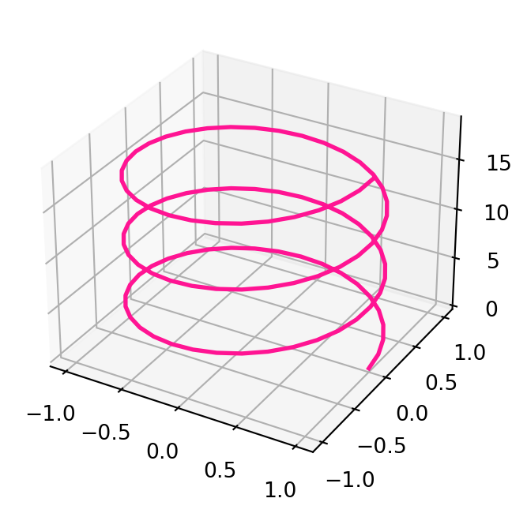
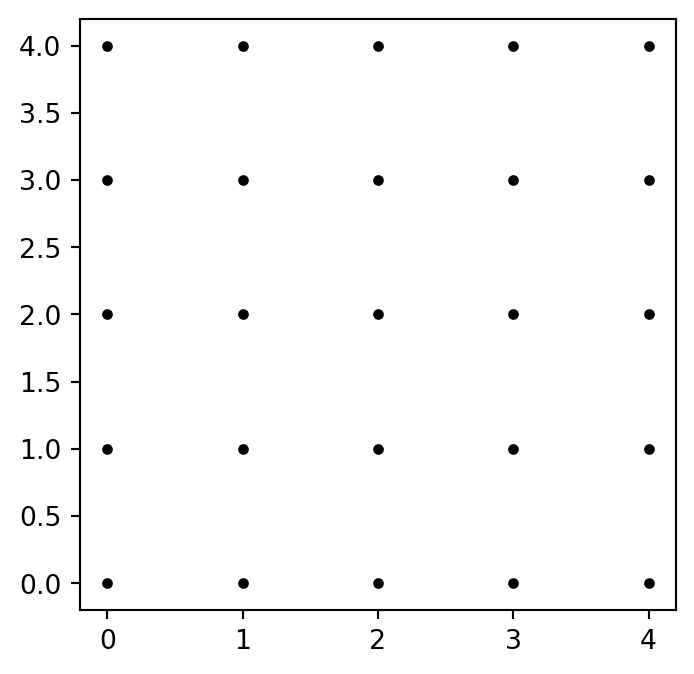

Suppose we want to plot the parabola \(y=t^2\) for \(t\) in the interval \([-3,3]\). In our language, this is the two-dimensional curve \[
\gamma(t) = ( t, t^2 ) \,, \quad t \in [-3,3] \,.
\] The two Python libraries we use to plot \(\gamma\) are numpy and matplotlib. In short, numpy handles multi-dimensional arrays and matrices, and can perform high-level mathematical functions on them. For any question you may have about numpy, answers can be found in the searchable documentation available here. Instead matplotlib is a plotting library, with documentation here. Python libraries need to be imported every time you want to use them. In our case we will import:
import numpy as npimport matplotlib.pyplot as plt
The above imports numpy and the module pyplot from matplotlib, and renames them to np and plt, respectively. These shorthands are standard in the literature, and they make code much more readable.
The function for plotting 2D graphs is called plot(x,y) and is contained in plt. As the syntax suggests, plot takes as arguments two arrays \[
x=[x_1, \ldots, x_n]\,, \quad y=[y_1,\ldots,y_n]\,.
\] As output it produces a graph which is the linear interpolation of the points \((x_i,y_i)\) in \(\mathbb{R}^2\), that is, consecutive points \((x_i,y_i)\) and \((x_{i+1},y_{i+1})\) are connected by a segment. Using plot, we can graph the curve \(\gamma(t)=(t,t^2)\) like so:
# Code for plotting gammaimport numpy as npimport matplotlib.pyplot as plt# Generating array tt = np.array([-3,-2,-1,0,1,2,3])# Computing array ff = t**2# Plotting the curveplt.plot(t,f)# Plotting dotsplt.plot(t,f,"ko")# Showing the plotplt.show()
Let us comment the above code. The variable t is a numpy array containing the ordered values \[
t = [-3,-2,-1,0,1,2,3]\,.
\tag{2.1}\] This array is then squared entry-by-entry via the operation \(t\ast\!\ast 2\) and saved in the new numpy array f, that is, \[
f = [9,4,1,0,1,4,9] \,.
\] The arrays t and f are then passed to plot(t,f), which produces the above linear interpolation, with t on the x-axis and f on the y-axis. The command plot(t,f,'ko') instead plots a black dot at each point \((t_i,f_i)\). The latter is clearly not needed to obtain a plot, and it was only included to highlight the fact that plot is actually producing a linear interpolation between points. Finally plt.show() displays the figure in the user window1.
Of course one can refine the plot so that it resembles the continuous curve \(\gamma(t)=(t,t^2)\) that we all have in mind. This is achieved by generating a numpy array t with a finer stepsize, invoking the function np.linspace(a,b,n). Such call will return a numpy array which contains n evenly spaced points, starts at a, and ends in b. For example np.linspace(-3,3,7) returns our original array t at 2.1, as shown below
# Displaying output of np.linspaceimport numpy as np# Generates array t by dividing interval # (-3,3) in 7 partst = np.linspace(-3,3, 7)# Prints array tprint("t =", t)
t = [-3. -2. -1. 0. 1. 2. 3.]
In order to have a more refined plot of \(\gamma\), we just need to increase \(n\).
# Plotting gamma with finer step-sizeimport numpy as npimport matplotlib.pyplot as plt# Generates array t by dividing interval # (-3,3) in 100 partst = np.linspace(-3,3, 100)# Computes ff = t**2# Plottingplt.plot(t,f)plt.show()
We now want to plot a parametric curve \(\gamma \colon (a,b) \to \mathbb{R}^2\) with \[
\gamma(t) = (x(t), y(t)) \,.
\] Clearly we need to modify the above code. The variable t will still be a numpy array produced by linspace. We then need to introduce the arrays x and y which ecode the first and second components of \(\gamma\), respectively.
import numpy as npimport matplotlib.pyplot as plt# Divides time interval (a,b) in n parts# and saves output to numpy array tt = np.linspace(a, b, n)# Computes gamma from given functions x(y) and y(t)x = x(t)y = y(t)# Plots the curveplt.plot(x,y)# Shows the plotplt.show()
We use the above code to plot the 2D curve known as the Fermat’s spiral\[
\gamma(t) = ( \sqrt{t} \cos(t) , \sqrt{t} \sin(t) ) \quad
\text{ for } \quad t \in [0,50] \,.
\tag{2.2}\]
# Plotting Fermat's spiralimport numpy as npimport matplotlib.pyplot as plt# Divides time interval (0,50) in 500 partst = np.linspace(0, 50, 500)# Computes Fermat's Spiralx = np.sqrt(t) * np.cos(t)y = np.sqrt(t) * np.sin(t)# Plots the Spiralplt.plot(x,y)plt.show()
Before displaying the output of the above code, a few comments are in order. The array t has size 500, due to the behavior of linspace. You can also fact check this information by printing np.size(t), which is the numpy function that returns the size of an array. We then use the numpy function np.sqrt to compute the square root of the array t. The outcome is still an array with the same size of t, that is, \[
t=[t_1,\ldots,t_n] \quad \implies \quad \sqrt{t} = [\sqrt{t_1}, \ldots, \sqrt{t_n}] \,.
\] Similary, the call np.cos(t) returns the array \[
\cos(t) = [\cos(t_1), \ldots, \cos(t_n)] \,.
\] The two arrays np.sqrt(t) and np.cos(t) are then multiplied, term-by-term, and saved in the array x. The array y is computed similarly. The command plt.plot(x,y) then yields the graph of the Fermat’s spiral:

Fermat’s spiral
The above plots can be styled a bit. For example we can give a title to the plot, label the axes, plot the spiral by means of green dots, and add a plot legend, as coded below:
# Adding some styleimport numpy as npimport matplotlib.pyplot as plt# Computing Spiralt = np.linspace(0, 50, 500)x = np.sqrt(t) * np.cos(t)y = np.sqrt(t) * np.sin(t)# Generating figureplt.figure(1, figsize = (4,4))# Plotting the Spiral with some optionsplt.plot(x, y, '--', color ='deeppink', linewidth =1.5, label ='Spiral')# Adding gridplt.grid(True, color ='lightgray')# Adding titleplt.title("Fermat's spiral for t between 0 and 50")# Adding axes labelsplt.xlabel("x-axis", fontsize =15)plt.ylabel("y-axis", fontsize =15)# Showing plot legendplt.legend()# Show the plotplt.show()
Adding a bit of style
Let us go over the novel part of the above code:
plt.figure(): This command generates a figure object. If you are planning on plotting just one figure at a time, then this command is optional: a figure object is generated implicitly when calling plt.plot. Otherwise, if working with n figures, you need to generate a figure object with plt.figure(i) for each i between 1 and n. The number i uniquely identifies the i-th figure: whenever you call plt.figure(i), Python knows that the next commands will refer to the i-th figure. In our case we only have one figure, so we have used the identifier 1. The second argument figsize = (a,b) in plt.figure() specifies the size of figure 1 in inches. In this case we generated a figure 4 x 4 inches.
plt.plot: This is plotting the arrays x and y, as usual. However we are adding a few aestethic touches: the curve is plotted in dashed style with --, in deep pink color and with a line width of 1.5. Finally this plot is labelled Spiral.
plt.grid: This enables a grid in light gray color.
plt.title: This gives a title to the figure, displayed on top.
plt.xlabel and plt.ylabel: These assign labels to the axes, with font size 15 points.
plt.legend(): This plots the legend, with all the labels assigned in the plt.plot call. In this case the only label is Spiral.
Matplotlib styles
There are countless plot types and options you can specify in matplotlib, see for example the Matplotlib Gallery. Of course there is no need to remember every single command: a quick Google search can do wonders.
Generating arrays
There are several ways of generating evenly spaced arrays in Python. For example the function np.arange(a,b,s) returns an array with values within the half-open interval \([a,b)\), with spacing between values given by s. For example
import numpy as npt = np.arange(0,1, 0.2)print("t =",t)
t = [0. 0.2 0.4 0.6 0.8]
2.2 Implicit curves 2D
A curve \(\gamma\) in \(\mathbb{R}^2\) can also be defined as the set of points \((x,y) \in \mathbb{R}^2\) satisfying \[
f(x,y)=0
\] for some given \(f \colon \mathbb{R}^2 \to \mathbb{R}\). For example let us plot the curve \(\gamma\) implicitly defined by \[
f(x,y) =( 3 x^2 - y^2 )^2 \ y^2 - (x^2 + y^2 )^4
\] for \(-1 \leq x,y \leq 1\). First, we need a way to generate a grid in \(\mathbb{R}^2\) so that we can evaluate \(f\) on such grid. To illustrate how to do this, let us generate a grid of spacing 1 in the 2D square \([0,4]^2\). The goal is to obtain the 5 x 5 matrix of coordinates \[
A = \left(
\begin{matrix}
(0,0) & (1,0) & (2,0) & (3,0) & (4,0) \\
(0,1) & (1,1) & (2,1) & (3,1) & (4,1) \\
(0,2) & (1,2) & (2,2) & (2,3) & (2,4) \\
(0,3) & (1,3) & (2,3) & (3,3) & (3,4) \\
(0,4) & (1,4) & (2,4) & (3,4) & (4,4) \\
\end{matrix}
\right)
\] which corresponds to the grid of points

Figure 2.1: The 5 x 5 grid corresponding to the matrix A
To achieve this, first generate x and y coordinates using
x = np.linspace(0, 4, 5)y = np.linspace(0, 4, 5)
This generates coordinates \[
x = [0, 1, 2, 3, 4] \,, \quad y = [0, 1, 2, 3, 4] \,.
\] We then need to obtain two matrices \(X\) and \(Y\): one for the \(x\) coordinates in \(A\), and one for the \(y\) coordinates in \(A\). This can be achieved with the code
If now we plot \(X\) against \(Y\) via the command
plt.plot(X, Y, 'k.')
we obtain Figure 2.1. In the above command the style 'k.' represents black dots. This procedure would be impossible with large vectors. Thankfully there is a function in numpy doing exactly what we need: np.meshgrid.
# Demonstrating np.meshgridimport numpy as np# Generating x and y coordinatesxlist = np.linspace(0, 4, 5)ylist = np.linspace(0, 4, 5)# Generating grid X, YX, Y = np.meshgrid(xlist, ylist)# Printing the matrices X and Y# np.array2string is only needed to align outputsprint('X =', np.array2string(X, prefix='X= '))print('\n') print('Y =', np.array2string(Y, prefix='Y= '))
Now that we have our grid, we can evaluate the function \(f\) on it. This is simply done with the command
Z =((3*(X**2) - Y**2)**2)*(Y**2) - (X**2+ Y**2)**4
This will return the matrix \(Z\) containing the values \(f(x_i,y_i)\) for all \((x_i,y_i)\) in the grid \([X,Y]\). We are now interested in plotting the points in the grid \([X,Y]\) for which \(Z\) is zero. This is achieved with the command
plt.contour(X, Y, Z, [0])
Putting the above observations together, we have the code for plotting the curve \(f=0\) for \(-1 \leq x,y \leq 1\).
# Plotting f=0import numpy as npimport matplotlib.pyplot as plt# Generates coordinates and gridxlist = np.linspace(-1, 1, 5000)ylist = np.linspace(-1, 1, 5000)X, Y = np.meshgrid(xlist, ylist)# Computes fZ =((3*(X**2) - Y**2)**2)*(Y**2) - (X**2+ Y**2)**4# Creates figure objectplt.figure(figsize = (4,4))# Plots level set Z = 0plt.contour(X, Y, Z, [0])# Set axes labelsplt.xlabel("x-axis", fontsize =15)plt.ylabel("y-axis", fontsize =15)# Shows plotplt.show()
Plot of the curve defined by f=0
2.3 Curves in 3D
Plotting in 3D with matplotlib requires the mplot3d toolkit, see here for documentation. Therefore our first lines will always be
# Packages for 3D plotsimport numpy as npimport matplotlib.pyplot as pltfrom mpl_toolkits import mplot3d
We can now generate empty 3D axes
# Generates and plots empty 3D axesimport numpy as npimport matplotlib.pyplot as pltfrom mpl_toolkits import mplot3d# Creates figure objectfig = plt.figure(figsize = (4,4))# Creates 3D axes objectax = plt.axes(projection ='3d')# Shows the plotplt.show()
In the above code fig is a figure object, while ax is an axes object. In practice, the figure object contains the axes objects, and the actual plot information will be contained in axes. If you want multiple plots in the figure container, you should use the command
ax = fig.add_subplot(nrows = m, ncols = n, pos = k)
This generates an axes object ax in position k with respect to a m x n grid of plots in the container figure. For example we can create a 3 x 2 grid of empty 3D axes as follows
We are now ready to plot a 3D parametric curve \(\gamma \colon (a,b) \to \mathbb{R}^3\) of the form \[
\gamma(t) = (x(t), y(t), z(t))
\] with the code
# Code to plot 3D curveimport numpy as npimport matplotlib.pyplot as pltfrom mpl_toolkits import mplot3d# Generates figure and 3D axesfig = plt.figure(figsize = (size1,size2))ax = plt.axes(projection ='3d')# Plots gridax.grid(True)# Divides time interval (a,b)# into n parts and saves them in array tt = np.linspace(a, b, n)# Computes the curve gamma on array t# for given functions x(t), y(t), z(t)x = x(t) y = y(t)z = z(t)# Plots gammaax.plot3D(x, y, z)# Setting title for plotax.set_title('3D Plot of gamma')# Setting axes labelsax.set_xlabel('x', labelpad ='p')ax.set_ylabel('y', labelpad ='p')ax.set_zlabel('z', labelpad ='p')# Shows the plotplt.show()
For example we can use the above code to plot the Helix \[
x(t) = \cos(t) \,, \quad
y(t) = \sin(t) \,, \quad
z(t) = t
\tag{2.3}\] for \(t \in [0,6\pi]\).
# Plotting 3D Heliximport numpy as npimport matplotlib.pyplot as pltfrom mpl_toolkits import mplot3d# Generates figure and 3D axesfig = plt.figure(figsize = (4,4))ax = plt.axes(projection ='3d')# Plots gridax.grid(True)# Divides time interval (0,6pi) in 100 parts t = np.linspace(0, 6*np.pi, 100)# Computes Helixx = np.cos(t) y = np.sin(t)z = t# Plots Helix - We added some stylingax.plot3D(x, y, z, color ="deeppink", linewidth =2)# Setting title for plotax.set_title('3D Plot of Helix')# Setting axes labelsax.set_xlabel('x', labelpad =20)ax.set_ylabel('y', labelpad =20)ax.set_zlabel('z', labelpad =20)# Shows the plotplt.show()
We can also change the viewing angle for a 3D plot store in ax. This is done via
ax.view_init(elev = e, azim = a)
which displays the 3D axes with an elevation angle elev of e degrees and an azimuthal angle azim of a degrees. In other words, the 3D plot will be rotated by e degrees above the xy-plane and by a degrees around the z-axis. For example, let us plot the helix with 2 viewing angles. Note that we generate 2 sets of axes with the add_subplot command discussed above.
# Plotting 3D Heliximport numpy as npimport matplotlib.pyplot as pltfrom mpl_toolkits import mplot3d# Generates figure objectfig = plt.figure(figsize = (4,4))# Generates 2 sets of 3D axesax1 = fig.add_subplot(1, 2, 1, projection ='3d')ax2 = fig.add_subplot(1, 2, 2, projection ='3d')# We will not show a grid this timeax1.grid(False)ax2.grid(False)# Divides time interval (0,6pi) in 100 parts t = np.linspace(0, 6*np.pi, 100)# Computes Helixx = np.cos(t) y = np.sin(t)z = t# Plots Helix on both axesax1.plot3D(x, y, z, color ="deeppink", linewidth =1.5)ax2.plot3D(x, y, z, color ="deeppink", linewidth =1.5)# Setting title for plotsax1.set_title('Helix from above')ax2.set_title('Helix from side')# Changing viewing angle of ax1# View from above has elev = 90 and azim = 0ax1.view_init(elev =90, azim =0)# Changing viewing angle of ax2# View from side has elev = 0 and azim = 0ax2.view_init(elev =0, azim =0)# Shows the plotplt.show()
2.4 Interactive plots
Matplotlib produces beautiful static plots; however it lacks built in interactivity. For this reason I would also like to show you how to plot curves with Plotly, a very popular Python graphic library which has built in interactivity. Documentation for Plotly and lots of examples can be found here.
2.4.1 2D Plots
Say we want to plot the 2D curve \(\gamma \colon (a,b) \to \mathbb{R}^2\) parametrized by \[
\gamma(t) = ( x(t) , y(t) ) \,.
\] The Plotly module needed is called graph_objects, usually imported as go. The function for line plots is called Scatter. For documentation and examples see link. The code for plotting \(\gamma\) is as follows.
# Plotting gamma 2D# Import librariesimport numpy as npimport plotly.graph_objects as go# Compute times grid by dividing (a,b) in # n equal partst = np.linspace(a, b, n)# Compute the parametric curve gamma# for given functions x(t) and y(t)x = x(t)y = y(t)# Create empty figure object and saves # it in the variable "fig"fig = go.Figure()# Create the line plot objectdata = go.Scatter(x = x, y = y, mode ='lines', name ='gamma')# Add "data" plot to the figure "fig"fig.add_trace(data)# Display the figurefig.show()
Some comments about the functions called above:
go.Figure: generates an empty Plotly figure
go.Scatter: generates the actual plot. By default a scatter plot is produced. To obtain linear interpolation of the points, set mode = 'lines'. You can also label the plot with name = "string"
add_trace: adds a plot to a figure
show: displays a figure
As an example, let us plot the Fermat’s Spiral defined at 2.2. Compared to the above code, we also add a bit of styling.
# Plotting Fermat's Spiral# Import librariesimport numpy as npimport plotly.graph_objects as go# Compute times grid by dividing (0,50) in # 500 equal partst = np.linspace(0, 50, 500)# Computes Fermat's Spiralx = np.sqrt(t) * np.cos(t)y = np.sqrt(t) * np.sin(t)# Create empty figure object and saves # it in the variable "fig"fig = go.Figure()# Create the line plot objectdata = go.Scatter(x = x, y = y, mode ='lines', name ='gamma')# Add "data" plot to the figure "fig"fig.add_trace(data)# Here we start with the styling options# First we set a figure titlefig.update_layout(title_text ="Plotting Fermat's Spiral with Plotly")# Adjust figure sizefig.update_layout(autosize =False, width =600, height =600)# Change background canvas colorfig.update_layout(paper_bgcolor ="snow")# Axes styling: adding title and ticks positions fig.update_layout(xaxis=dict( title_text="X-axis Title", titlefont=dict(size=20), tickvals=[-6,-4,-2,0,2,4,6], ), yaxis=dict( title_text="Y-axis Title", titlefont=dict(size=20), tickvals=[-6,-4,-2,0,2,4,6], ))# Display the figurefig.show()
As you can examine by moving the mouse pointer, the above plot is interactive. Note that the style customizations could be listed in a single call of the function update_layout. There are also pretty buit-in themes available, see here. The layout can be specified with the command
fig.update_layout(template = template_name)
where template_name can be "plotly", "plotly_white", "plotly_dark", "ggplot2", "seaborn", "simple_white“.
2.4.2 3D Plots
We now want to plot a 3D curve \(\gamma \colon (a,b) \to \mathbb{R}^3\) parametrized by \[
\gamma(t) = ( x(t) , y(t) , z(t)) \,.
\] Again we use the Plotly module graph_objects, imported as go. The function for 3D line plots is called Scatter3d, and documentation and examples can be found at link. The code for plotting \(\gamma\) is as follows.
# Plotting gamma 3D# Import librariesimport numpy as npimport plotly.graph_objects as go# Compute times grid by dividing (a,b) in # n equal partst = np.linspace(a, b, n)# Compute the parametric curve gamma# for given functions x(t), y(t), z(t)x = x(t)y = y(t)z = z(t)# Create empty figure object and saves # it in the variable "fig"fig = go.Figure()# Create the line plot objectdata = go.Scatter3d(x = x, y = y, z = z, mode ='lines', name ='gamma')# Add "data" plot to the figure "fig"fig.add_trace(data)# Display the figurefig.show()
The functions go.Figure, add_trace and show appearing above are described in the previous Section. The new addition is go.Scatter3d, which generates a 3D scatter plot of the points stored in the array [x,y,z]. Setting mode = 'lines' results in a linear interpolation of such points. As before, the curve can be labeled by setting name = "string".
As an example, we plot the 3D Helix defined at 2.3. We also add some styling. We can also use the same pre-defined templates descirbed for go.Scatter in the previous section, see here for official documentation.
# Plotting 3D Helix# Import librariesimport numpy as npimport plotly.graph_objects as go# Divides time interval (0,6pi) in 100 parts t = np.linspace(0, 6*np.pi, 100)# Computes Helixx = np.cos(t) y = np.sin(t)z = t# Create empty figure object and saves # it in the variable "fig"fig = go.Figure()# Create the line plot object# We add options for the line width and colordata = go.Scatter3d( x = x, y = y, z = z, mode ='lines', name ='gamma', line =dict(width =10, color ="darkblue") )# Add "data" plot to the figure "fig"fig.add_trace(data)# Here we start with the styling options# First we set a figure titlefig.update_layout(title_text ="Plotting 3D Helix with Plotly")# Adjust figure sizefig.update_layout( autosize =False, width =600, height =600 )# Set pre-defined templatefig.update_layout(template ="seaborn")# Options for curve line style# Display the figurefig.show()
The above plot is interactive: you can pan arond by dragging the pointer. Once again, the style customizations could be listed in a single call of the function update_layout.
The command plt.show() can be omitted if working in Jupyter Notebook, as it is called by default.↩︎